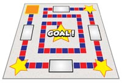

Extra
Un giro delle discoteche
There are endless discoteche in Italy. To limit the search, start by looking at Lucca.
It's an ideal place for young people. Many teenagers know each other and it is a small and safe town. It is easy to access via motorino. Therefore, it is very convenient for teenagers who are under18 and don't have a driver's licence.
Cerchi discoteche Lucca?
La discoteca Midho è molto famosa. Vuoi scoprire un luogo che ha fatto la storia della Lucca by night? Visita www.metropolino.com, put 'Midho' in the 'Nome locale' box and click on the 'Ricerca' button to find out more about this famous discoteca. Follow the 'Lucca' link for discoteche in Lucca or 'Discoteche' link for other discoteche.
If you prefer to search in the city of your choice go to www.yahoo.it, put 'discoteche + nome della città' in the ricerca box.
Creating a board game
Language structure: Il passato prossimo
Use your knowledge of the past tense to create a board game in Italian. Per esempio:

- Cosa hai fatto sabato sera?
- Cosa hai mangiato per cena ieri sera?
You may want to choose a theme, per esempio le vacanze, la festa..
Use the following time expressions to help you write your questions.
Time expressions in the past
- ieri
- due giorni fa
- l’anno scorso/passato
- venerdì scorso
Here are some examples of the instructions that you may wish to use in your game.
- vai avanti
- uno spazio/due spazi
- salta un turno
- tira di nuovo
- vai indietro
- la fine
Divertiti con i verbi!!